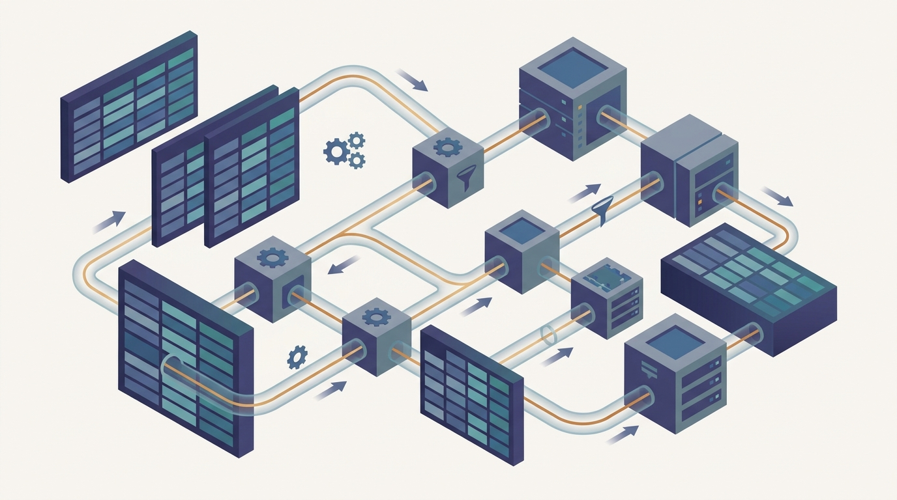

"MapReduce made me write everything to disk after every thought, as if I might forget. Spark let me keep the working set in memory and trusted me to remember how I got there, so that when a machine died, it could simply replay my reasoning instead of my writes."
An RDD Recomputing a Lost Partition From Lineage
Chapter 6 gave you a model that survives failure by writing to disk after every stage; this chapter gives you one that survives failure by remembering how each piece of data was computed, and so can keep the working set in memory between stages. That single change, from materialize-everything to recompute-from-lineage, is what makes Spark the workhorse of distributed data processing for AI. The resilient distributed dataset (RDD) is an immutable, partitioned collection that records its lineage, the exact chain of transformations that produced it, so a lost partition is rebuilt by replaying that chain rather than by reading a checkpoint. On top of the RDD sit DataFrames and Spark SQL, a relational layer whose Catalyst optimizer rewrites your query into an efficient physical plan and whose Tungsten engine runs it on compact in-memory layouts. The whole system is lazy: transformations build a directed acyclic graph of intent, and nothing runs until an action forces it, which gives the optimizer a whole pipeline to plan at once. This chapter builds that stack from the bottom: why MapReduce's disk round-trips hurt, what an RDD is and how lineage replaces replication, how DataFrames and the optimizer add a relational layer, how lazy DAG execution schedules stages around shuffle boundaries, and how partitioning, caching, joins, and skew determine whether a cluster runs at full speed or stalls on one overloaded task. It closes with PySpark as the practical front end for AI data pipelines and the tuning discipline that turns a correct job into a fast one. The shuffle you learned to reason about in Chapter 6 is still here; Spark does not abolish it, it schedules around it and keeps everything else warm.
Chapter Overview
This is the second chapter of Part II, and it takes the map-shuffle-reduce skeleton you built in Chapter 6 and rebuilds the machinery around it for speed and expressiveness. The motivating complaint is concrete: MapReduce writes intermediate results to a replicated disk between every job, so an iterative algorithm that loops twenty times pays for twenty round-trips through the file system. Most machine-learning workloads are exactly that shape, repeated passes over the same data, and that is the cost Spark was built to remove by keeping the working set in memory and rebuilding lost partitions from lineage rather than from disk.
The chapter develops the system from the bottom up. It opens with the gap MapReduce left and the resilient distributed dataset that fills it, the immutable partitioned collection whose recorded lineage replaces replication as the fault-tolerance mechanism. It then climbs the abstraction stack: DataFrames and Spark SQL add a relational layer with a cost-based optimizer, lazy evaluation turns a chain of transformations into a directed acyclic graph that the scheduler plans as a whole, and the transformation-versus-action distinction governs when that graph actually runs. The middle of the chapter is about making it fast and correct at scale: how partitioning and caching control data placement and reuse, and how joins, shuffles, and data skew decide whether work spreads evenly or piles onto one straggling task. The chapter closes by turning Spark toward AI, PySpark as the front end for feature engineering and distributed data preparation, and the performance-tuning discipline (partition sizing, broadcast joins, adaptive query execution) that separates a job that finishes from one that finishes fast.
Read in order, the nine sections take you from "MapReduce is too slow for iteration" to a working command of Spark's execution model and the tuning instincts a practitioner needs: the in-memory successor whose lineage and lazy DAG you meet here, and whose storage and loading layer you study next in Chapter 8.
Prerequisites
This chapter is the direct sequel to Chapter 6: The MapReduce Model and Distributed Algorithms, and it assumes you have read it. From that chapter you carry the map-shuffle-reduce pattern, the understanding that the shuffle is an all-to-all data movement whose cost dominates many jobs, and a candid picture of where MapReduce strains: the disk round-trip on every iteration and the awkwardness of multi-stage pipelines. Spark is the answer to exactly those weaknesses, so the more clearly you remember the limits section of Chapter 6, the more sense Spark's design choices will make. You also lean on Part I: the partial-failure and partitioning vocabulary of Chapter 2: Distributed Systems Concepts for AI (lineage is a fault-tolerance strategy you can now compare against replication), and the speedup, efficiency, and communication-cost lenses of Chapter 3 and Chapter 4 that you use to judge whether caching and repartitioning actually pay off. The chapter assumes comfortable Python (the code is PySpark) and basic SQL and relational thinking for the DataFrame sections; no prior experience with Spark, Hadoop, or any cluster framework is required, and the mathematical background is refreshed in Appendix A: Mathematical Background.
Learning Objectives
- Explain why MapReduce's between-stage disk materialization makes iterative and multi-pass workloads slow, and state what an in-memory model must provide to fix it without giving up fault tolerance.
- Define the resilient distributed dataset, and explain how recorded lineage lets Spark rebuild a lost partition by recomputation rather than replication.
- Use DataFrames and Spark SQL for relational data processing, and describe at a high level how the Catalyst optimizer turns a query into an efficient physical plan.
- Distinguish transformations from actions, and trace how lazy evaluation builds a directed acyclic graph that the scheduler divides into stages at shuffle boundaries.
- Control partitioning and caching deliberately, and reason about when persisting a dataset in memory speeds a workload and when it wastes it.
- Choose among shuffle, broadcast, and sort-merge joins, diagnose data skew, and apply the techniques that keep one overloaded partition from stalling a whole stage.
- Build a PySpark data pipeline for an AI workload, and apply tuning levers (partition sizing, broadcast thresholds, adaptive query execution) to turn a correct job into a fast one.
If you keep one thing from this chapter, keep this: Spark keeps the data in memory between stages and rebuilds what it loses from lineage rather than from disk, then lets a lazy optimizer plan the whole pipeline at once, so the iterative workloads MapReduce dreaded become ordinary fast loops. Read forward, the sections build the idea in layers: first the disk round-trip that motivates the change, then the RDD and its lineage that make in-memory computation safe, then the DataFrame and optimizer that raise the abstraction, then the lazy DAG and the transformation-action split that govern execution, and finally the partitioning, caching, joins, skew, and tuning that decide whether the cluster runs flat-out or stalls. Read as a question, the chapter asks of any Spark job: what is cached, where are the shuffle boundaries, and is the work spread evenly, and that question is the one you carry into every data pipeline in the rest of the book. The roadmap below walks the nine sections that build that habit of mind.
Chapter Roadmap
- 7.1 From MapReduce to Spark Names the cost that motivates the whole chapter, MapReduce's replicated-disk write between every stage, and shows why keeping the working set in memory across stages is the change that makes iterative workloads tractable.
- 7.2 Resilient Distributed Datasets Defines the RDD as an immutable, partitioned collection whose recorded lineage lets a lost partition be rebuilt by replaying its transformations instead of reading a replicated checkpoint.
- 7.3 DataFrames and Spark SQL Adds the relational layer on top of RDDs, the typed DataFrame and the SQL interface, and the Catalyst optimizer that rewrites a declarative query into an efficient physical plan.
- 7.4 Lazy Evaluation and DAG Execution Shows how transformations build a directed acyclic graph of intent that nothing executes until an action forces it, and how the scheduler cuts that graph into stages at shuffle boundaries.
- 7.5 Transformations and Actions Draws the line between lazy transformations that extend the lineage graph and eager actions that trigger computation, and explains how narrow and wide dependencies determine where shuffles occur.
- 7.6 Partitioning and Caching Controls how data is spread across the cluster and when a dataset should be persisted in memory, the two levers that decide data locality and the reuse that makes in-memory computing pay.
- 7.7 Joins, Shuffles, and Data Skew Compares shuffle, broadcast, and sort-merge joins, anatomizes the shuffle that dominates their cost, and diagnoses the data skew that piles work onto one straggling partition.
- 7.8 PySpark for AI Workloads Turns Spark toward machine learning, using PySpark for distributed feature engineering, data preparation, and the large-scale transformations that feed training pipelines.
- 7.9 Spark Performance Tuning Collects the tuning discipline, partition sizing, broadcast thresholds, caching strategy, and adaptive query execution, that turns a correct Spark job into one that uses the whole cluster.
Read the nine sections in order and you will hold a working command of Spark's execution model and the instincts to tune it: Section 7.1 names the cost that justifies the system, Section 7.2 builds the RDD and the lineage that makes in-memory computing safe, Sections 7.3 and 7.4 raise the abstraction to DataFrames and the lazy DAG the optimizer plans, Sections 7.5 through 7.7 govern when computation runs and how to keep it spread evenly, and Sections 7.8 and 7.9 apply the system to AI pipelines and tune it for speed. The thread to watch is the shuffle of Chapter 6: Spark does not remove it, it schedules around it at the stage boundaries of Section 7.4 and pays for it in the joins and skew of Section 7.7, and the same all-to-all movement returns once more as the all-reduce of data-parallel training in Chapter 15.
What's Next?
This chapter gave you an engine that keeps data in memory and computes over it fast, but it quietly assumed the data was already laid out well on disk and could be read into the cluster efficiently. That assumption is where the next chapter begins. Chapter 8: Distributed Storage and Data Loading drops below Spark to the storage layer it reads from: object stores and distributed file systems, the columnar formats (Parquet, Arrow) and lakehouse tables (Delta, Iceberg) that make a scan fast, the partitioning and compaction that decide how much data a query must touch, and the data-loading pipeline that feeds a training job without starving the GPUs. The partitioning you learned to control inside Spark in Section 7.6 turns out to start on disk, and how you store the data determines how fast any engine, Spark included, can ever read it. Read it next, and watch the performance story move one layer down.
Bibliography & Further Reading
Foundational Papers
Zaharia, M., Chowdhury, M., Das, T., Dave, A., Ma, J., McCauley, M., Franklin, M. J., Shenker, S., Stoica, I. "Resilient Distributed Datasets: A Fault-Tolerant Abstraction for In-Memory Cluster Computing." NSDI, 2012. usenix.org
The paper that introduced the RDD and the lineage-based fault tolerance at the core of Section 7.2; the foundational source for everything this chapter builds.
Armbrust, M., Xin, R. S., Lian, C., Huai, Y., Liu, D., Bradley, J. K., Meng, X., Kaftan, T., Franklin, M. J., Ghodsi, A., Zaharia, M. "Spark SQL: Relational Data Processing in Spark." SIGMOD, 2015. dl.acm.org
The paper behind DataFrames, the Spark SQL interface, and the Catalyst optimizer that Section 7.3 describes; the source for how a declarative query becomes an efficient physical plan.
Zaharia, M., Xin, R. S., Wendell, P., Das, T., Armbrust, M., Dave, A., Meng, X., Rosen, J., Venkataraman, S., Franklin, M. J., Ghodsi, A., Gonzalez, J., Shenker, S., Stoica, I. "Apache Spark: A Unified Engine for Big Data Processing." Communications of the ACM 59(11), 2016. cacm.acm.org
The retrospective that frames Spark as one engine spanning batch, SQL, streaming, and machine learning; the high-level map of the system this whole chapter zooms into.
Meng, X., Bradley, J., Yavuz, B., Sparks, E., Venkataraman, S., Liu, D., Freeman, J., Tsai, D. B., Amde, M., Owen, S., Xin, D., Xin, R., Franklin, M. J., Zadeh, R., Zaharia, M., Talwalkar, A. "MLlib: Machine Learning in Apache Spark." Journal of Machine Learning Research 17(34), 2016. jmlr.org
The distributed machine-learning library built on Spark's primitives; the bridge from the data engine of this chapter to the AI feature pipelines of Section 7.8.
Tools and Documentation
Apache Spark. "Spark SQL, DataFrames and Datasets Guide" and project documentation. spark.apache.org
The official reference for every abstraction in this chapter, from RDD operations to DataFrame APIs to the configuration knobs behind the tuning of Section 7.9.
Apache Spark. "PySpark Documentation." spark.apache.org
The Python API reference for the DataFrame, SQL, and MLlib calls used throughout, the front end for the AI workloads of Section 7.8.
Apache Spark. "Tuning Spark" and "Performance Tuning" guides. spark.apache.org
The official guidance on memory, serialization, partition sizing, and data locality; the concrete reference behind the tuning discipline of Section 7.9.
Databricks. "Adaptive Query Execution" and Spark performance documentation. docs.databricks.com
The vendor documentation for adaptive query execution, which re-plans joins and repartitions skewed data at runtime; the modern answer to the skew problem of Section 7.7.
Books
Chambers, B., Zaharia, M. "Spark: The Definitive Guide: Big Data Processing Made Simple." O'Reilly Media, 2018. oreilly.com
The comprehensive practitioner reference, co-written by Spark's creator, covering DataFrames, SQL, structured streaming, and tuning; the deepest companion reading for Sections 7.3 through 7.9.
Karau, H., Warren, R. "High Performance Spark: Best Practices for Scaling and Optimizing Apache Spark." O'Reilly Media, 2017. oreilly.com
The performance-focused treatment of partitioning, caching, joins, and skew handling; the practical depth behind Sections 7.6, 7.7, and 7.9.